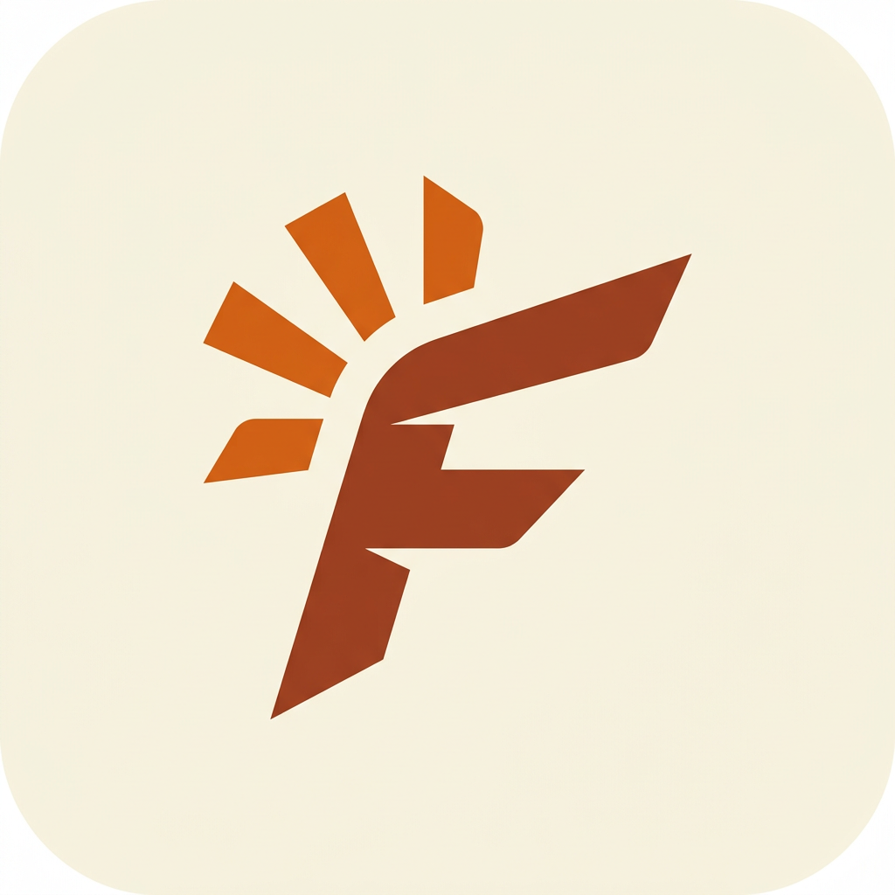
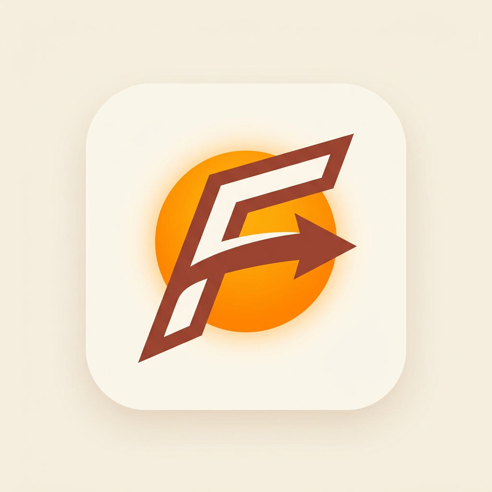

Fast Entregas ☀️
Quatro conceitos de ícone. Escolha o seu favorito: eles ainda não são a versão final de produção.


Quatro conceitos de ícone. Escolha o seu favorito: eles ainda não são a versão final de produção.

